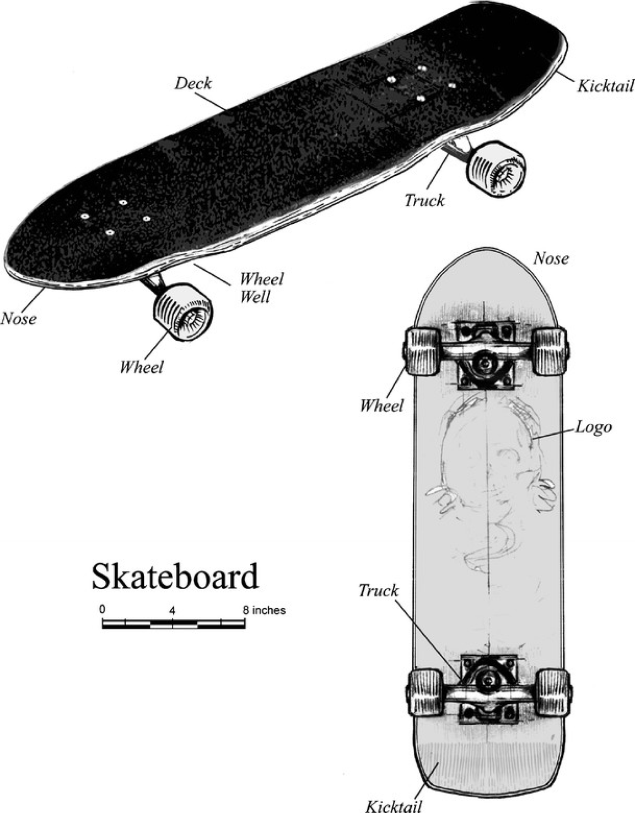

Skateboard

Ride
As a popular form of equipment, the skateboard is quick and easy to carry.
Show Off
A major focus of skateboard culture is to show off your skills on the board.
Compete
At its highest level, skateboard is an impressive sport.
Description
The skateboard, originating from California surfer culture in the 1940's and 50's, became increasingly common in the 1980's. The urban sport movement saw a peak in popularity in the early 2000's in form of homemade skate movies (the origins of the YouTube movement), video game franchises (especially Tony Hawk), and video games (particularly the Skate and Pro-Skater series).
Contact Information
email: test@address.com